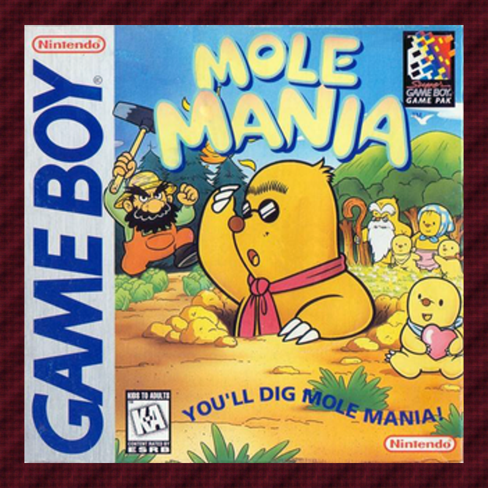

Mole Mania
A Shigeru Miyamoto–produced Game Boy puzzle gem from the tail end of the original handheld's life. Play as Muddy the mole, digging between the surface and an underground mirror-world to push a heavy iron ball through each grid-puzzle stage and rescue your family from the pompous farmer Jinbe. Our bonus pick runs alongside the monthly game through the summer.

| Platform | Nintendo Game Boy (Super Game Boy enhanced) |
|---|---|
| Genre | Action Puzzle |
| Released | (North America; Japan July 21, 1996) |
| Developer | Nintendo EAD / Pax Softnica |
| Producer | Shigeru Miyamoto |
| Director | Masayuki Kameyama |
| Publisher | Nintendo |
| Available | Game Boy cartridge, Nintendo 3DS Virtual Console (delisted), Emulation |
How Long to Beat
Community estimate — no formal HLTB entry
Where to Play
About This Game
Produced by Shigeru Miyamoto and developed by Nintendo EAD with longtime contractor Pax Softnica, Mole Mania launched in Japan on July 21, 1996 — the same day as the slimmer Game Boy Pocket — and reached North America in February 1997. A late-life original Game Boy title, it never got a sequel or a color remake, but a 2012 Nintendo 3DS Virtual Console release won it a second audience and a lasting reputation as an underrated first-party gem.
You control Muddy, a mole out to rescue his family from the pompous farmer Jinbe. Each stage is a grid puzzle: shove a heavy iron ball into a cracked wall to open the exit, digging downward at will to tunnel through an underground mirror of the surface, reposition objects, and slip past walls and enemies. A careless tunnel can trap the ball and force a restart, so every screen rewards planning over reflexes. Seven themed worlds each end in a boss, and the Super Game Boy version adds full colour and a custom border.
Did You Know?
- Produced by Shigeru Miyamoto — a rare direct Miyamoto production credit on an original Game Boy IP outside the Mario and Donkey Kong families.
- Nintendo EAD's last original Game Boy game — widely cited as the fourth and final one they developed internally, arriving at the very end of the monochrome handheld's life.
- It shared a birthday with the Game Boy Pocket — the July 21, 1996 Japanese launch landed the same day as Nintendo's slimmer handheld redesign.
- Super Game Boy support beyond cosmetics — it detects the SGB's faster clock and lowers the music's pitch and tempo to compensate, so the soundtrack sounds identical to a standard Game Boy.
Critical Reception
Contemporary reviews were sparse on the original release; most of the lasting critical attention came with the 2012 Virtual Console re-release.
Club Achievements
Other Participants
All participants earned trophies this bonus window!
Speedrun Records
Mole Mania has a small but active speedrunning scene, with categories covering a full any% run, an all-levels route through every stage, and a glitchless option for purists.
Soundtrack
Composed by Taro Bando
Taro Bando, who also contributed to Super Mario Kart and Stunt Race FX, wrote Mole Mania's roughly 30 tracks for the Game Boy's 4-channel sound chip. The Super Game Boy version compensates for the SGB's faster clock by lowering the music's pitch and tempo, so the soundtrack sounds the same on all hardware.
There is no official soundtrack release and the tracks have no formally assigned names. A fan-ripped GBS set is available at Zophar's Domain.
Sources & Attribution
- Game info, history, and credits adapted from Wikipedia
- Development background from Hardcore Gaming 101
- Review and screenshots via Nintendo Life
- Speedrun data from Speedrun.com
- Composer credits via VGMPF (Taro Bando)
- Box art via Wikipedia